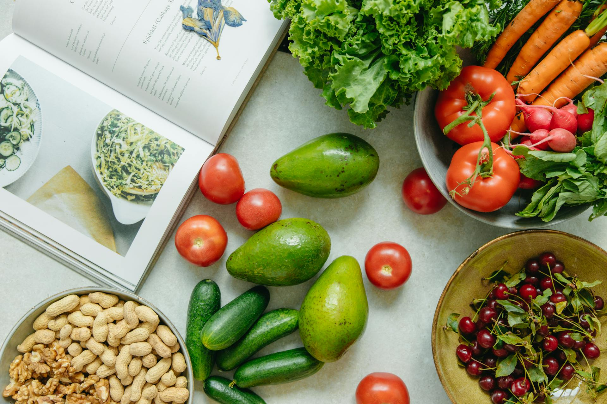

<section id="cover">
  <carousel [isAnimated]="true">
    <slide>
      
      <div class="carousel-caption d-none d-md-block">
        <h2>Embark on a Culinary Adventure with DishDiscovery</h2>
        <p>
          Explore the endless possibilities of culinary creativity with
          DishDiscovery. From savory soups to decadent desserts, our recipe
          showcase is your gateway to a world of delicious flavors and culinary
          inspiration.
        </p>
      </div>
    </slide>
    <slide>
      
      <div class="carousel-caption d-none d-md-block">
        <h2>Fresh, Fast, and Fabulous: Find Your Next Favorite Recipe</h2>
        <p>
          Dive into the world of quick and healthy cooking with DishDiscovery.
          Whether you're a novice chef or a seasoned pro, our recipe showcase
          offers a treasure trove of mouthwatering dishes that are easy to make
          and impossible to resist.
        </p>
      </div>
    </slide>
    <slide>
      
      <div class="carousel-caption d-none d-md-block">
        <h2>From Prep to Plate: Elevate Your Cooking Experience</h2>
        <p>
          Elevate your culinary skills and impress your taste buds with
          DishDiscovery. Discover the art of precision slicing and master the
          techniques that turn ordinary ingredients into extraordinary meals.
          With our recipe showcase, every dish is a masterpiece waiting to be
          created.
        </p>
      </div>
    </slide>
  </carousel>
</section>
